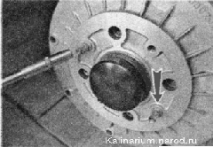
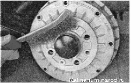
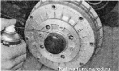
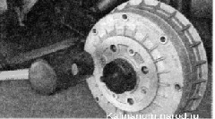

Задний тормозной барабан - снятие и установкаЗАДНИЙ ТОРМОЗНОЙ МЕХАНИЗМ
Задний тормозной механизм барабанного типа. При нажатии педали тормоза жидкость из главного тормозного цилиндра поступает в рабочие тормозные цилиндры. Под действием давления тормозной жидкости, поршни рабочих тормозных цилиндров выходят из них и прижимают тормозные колодки к рабочей поверхности тормозного барабана. После отпускания педали тормоза под воздействием стяжных пружин тормозные колодки утапливают поршни в цилиндр и отходят от тормозного барабана. В задних рабочих тормозных цилиндрах установлено устройство автоматической регулировки зазора между тормозными колодками и барабаном, ограничивающее утапливание поршней в цилиндр. Благодаря этому поддерживается оптимальный зазор между колодками и барабаном.Задние тормозные механизмы (за исключением рабочего цилиндра) являются также частью стояночной тормозной системы. Тормозной механизм заднего колеса: 1 — нижняя стяжная пружина колодок; 2 — тормозная колодка; 3 — прижимная пружина колодки; 4 — распорная планка; 5 — верхняя стяжная пружина; 6 — рабочий тормозной цилиндр; 7 - шит тормозного механизма; 8 — осевой палец распорного рычага; 9 — распорный рычаг; 10 - тормозная колодка (в сборе с распорным рычагом); 11 - наконечник троса стояночного тормоза Снятие 1. Подготавливаем автомобиль к выполнению работы. 2. Полностью опускаем рычаг стояночного тормоза. 3. Ослабляем натяжение тросов стояночного тормоза. 4. Торцовым ключом с глубокой головкой на 7 мм отворачиваем два направляющих штифта. 
5. Тщательно очищаем от грязи и коррозии цилиндрическую посадочную поверхность тормозного барабана на ступице. 
6. Обрабатываем посадочное место барабана на ступице проникающей смазкой.  7. Для облегчения снятия барабана обстукиваем его молотком с резиновым бойком по боковой поверхности 
|